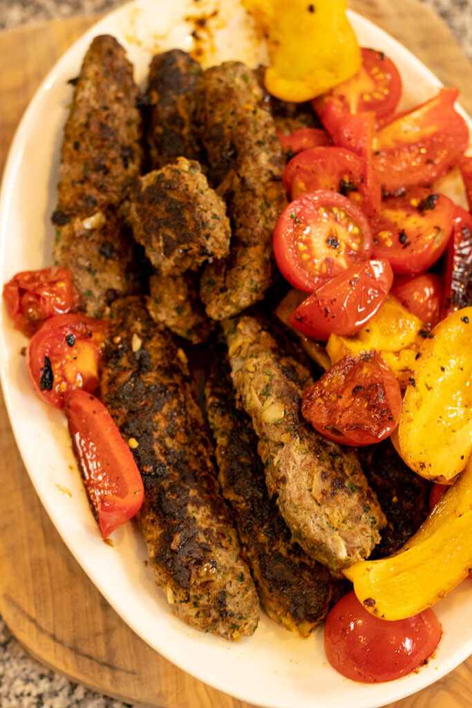

These juicy kabobs paired with tzaziki yogurt sauce will have your savoring for seconds! Paired with the fluffy buttery couscous, this is a meal that you don't want to miss.
- 8-9 wooden skewers
- Half a cucumber
- 1 Tbsp Dry Dill (2 Tbsp fresh dill)
- 1 cup of greek yogurt
- 2 Tbsp olive oil
- 1/2 tsp salt
- 1 lb of ground meat
- 1 small onion
- 1/2 bunch parsley finely chopped
- 1/2 bunch cilantro, finely chopped
- 1 bunch mint leaves, finely chopped
- 1 Tbsp paprika
- 1 1/2 tsp cumin
- 1 1/2 tsp salt
- 1/2 tsp black pepper
- 1/4 tsp cayenne pepper
- 1 3/4 cups of broth or water
- 1 Tbsp butter
- 1 Tbsp olive oil
- 1 1/2 cups couscous
- Grate the half of cucumber into a colander and squeeze out the excess water
- Stir in the chopped/dried dill, yogurt, grated cucumber, olive oil, lemon juice, and the 1/2 tsp salt into mixing bowl. Set aside.
- Combine the meat, onion, parsley, cilantro, mint, paprika, cumin, salt, black pepper, cayenne pepper and mix until fully incorporated
- Grab golf ball sized mixture and form log around skewers. Place on baking sheet.
- Turn oven to broil and place rack on top shelf of oven
- Bring 1 3/4 cups of broth to boil
- add 1/2 tsp salt, butter, 1Tbsp olive oil
- Once water is at boil, put in couscous, cover with lid and remove from heat. Leave aside while meat is cooking
- Place pan with skewers under broiler for 7 minutes
- Flip and cook another side for additional 7 minutes
- Remove lid from couscous and stir couscous with fork to fluff, salt if necessary
- Serve with couscous on plate and drape 2 skewers and drizzle with sauce and place additional sauce to dip.
Home Page